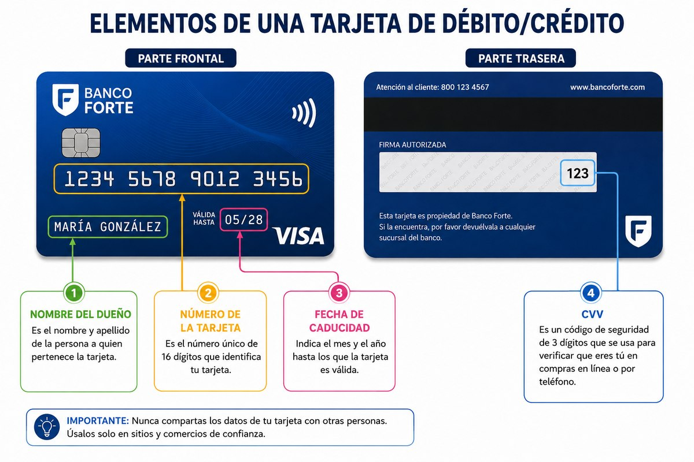
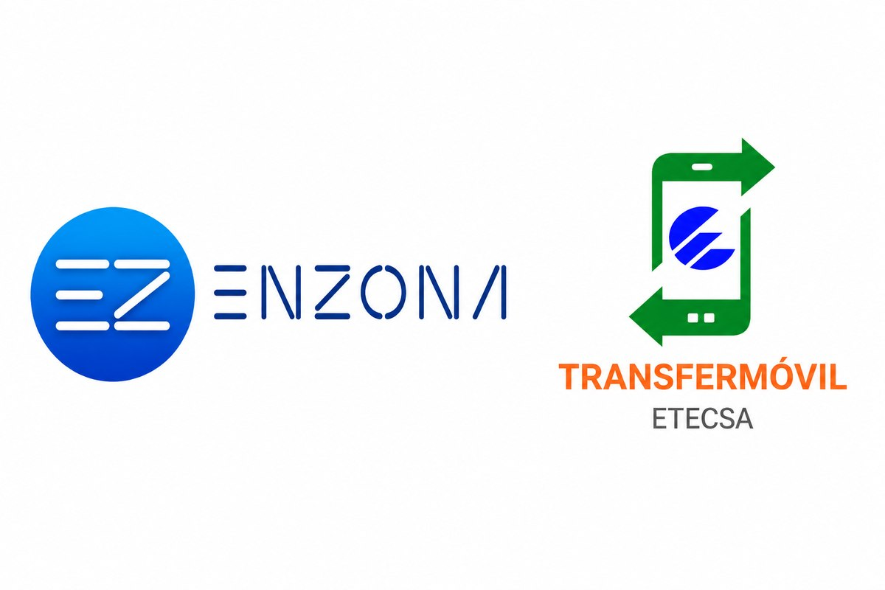
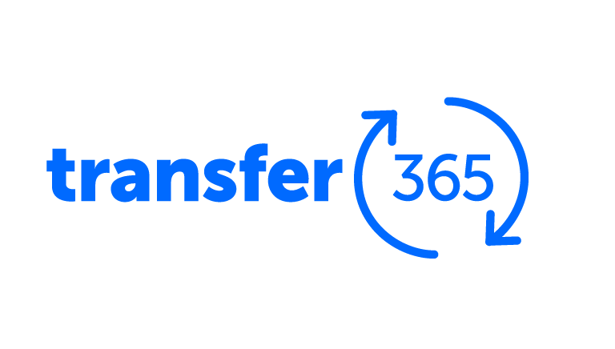
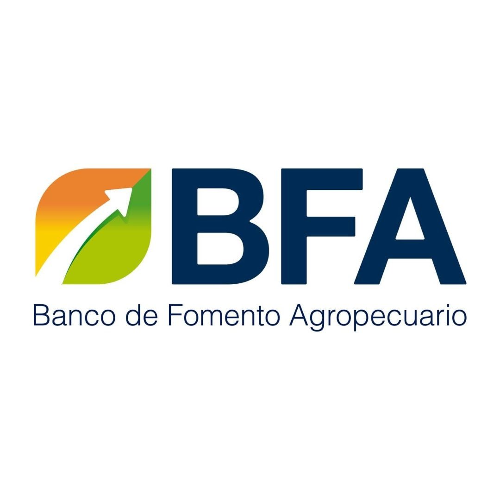
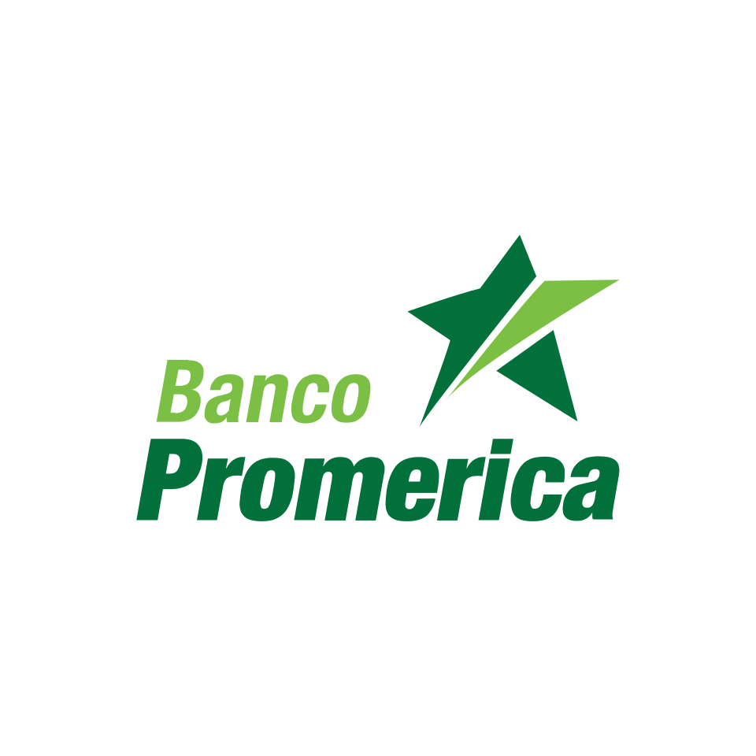
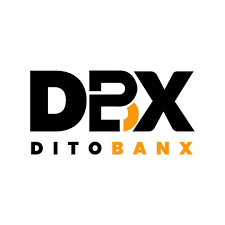

Cómo abrir una cuenta de banco en El Salvador siendo cubano
Abrirse una cuenta de banco en El Salvador puede ser un proceso complicado para migrantes. Personalmente, cuando decidí abrir una cuenta fui a 14 bancos, y solo pude abrirla en 2 de ellos. Lo bueno de El Salvador es que tienes muchas opciones: si en algún banco te cierran la puerta, puedes intentar con otro.
¿Cómo funcionan las transferencias? Comparación entre Cuba y El Salvador
Transferencias de dinero
En Cuba, para transferir dinero a otra persona lo hacemos al número de la tarjeta. En El Salvador, normalmente el envío se hace al número de cuenta bancaria, que es diferente del número de la tarjeta.
Las tarjetas en El Salvador tienen 3 números principales: el número de tarjeta, la fecha de caducidad y el CVC. Esos números son personales: cualquiera que tenga acceso a ellos tiene acceso al dinero de tu tarjeta, así que no los compartas con nadie.

Aplicaciones bancarias
En Cuba usamos Transfermóvil y EnZona, y ahí añadimos nuestras cuentas según el banco (BPA, Bandec o Metro). En El Salvador cada banco tiene su propia aplicación, y el método principal para transferir entre bancos es Transfer365, que permite enviar a cualquier cuenta bancaria dentro del país.


¿Qué necesito para abrir una cuenta siendo extranjero?
Los documentos básicos son:
- Carnet de residencia vigente
- Pasaporte
- NIT (Número de Identificación Tributaria)
En algunos bancos piden además:
- Prueba de residencia: puede ser una factura de agua o de luz del lugar donde te estás quedando, no importa que no esté a tu nombre.
- Contrato de renta: algunos pueden pedirlo.
Documentos que pueden ayudar, aunque muchas veces no son necesarios:
- Si tienes contrato de trabajo, una carta de tu empleador o una prueba de ingresos.
¿En qué bancos puede abrir cuenta un cubano?
Hay bancos que no abren cuentas a extranjeros, y otros que no abren cuenta si eres residente temporal.
Aclaración: esta información se basa en mi experiencia personal y en la de otros cubanos que conozco; en algunos casos pudiera variar.
Bancos que no abren cuentas a extranjeros:
- BTS: Banco de los Trabajadores Salvadoreños
- Abank
Bancos que abren cuentas solo a residentes permanentes:
- BAC
Bancos donde un cubano con residencia temporal puede abrir cuenta
BFA, Banco de Fomento Agropecuario

Es de los bancos donde puedes abrir una cuenta de forma muy sencilla: abres una cuenta de ahorros con un depósito inicial de $25 USD y el mismo día te vas con la tarjeta. La aplicación del banco puede ser tosca y las comisiones de extracción pueden ser altas: en algunos cajeros te cobran hasta $1.70 USD por extracción o verificación de saldo. No tiene problemas para pagar mediante POS. Excelente si todavía no tienes ninguna cuenta de banco o no te queda otra opción. El nombre puede confundirse con el Banco Agrícola, pero son bancos distintos.
Banco Promerica

De los mejores bancos. Últimamente, para abrir cuenta solo se necesitaba la tarjeta de residente, el pasaporte y el NIT, aunque puede variar según la sucursal y la persona que te atienda. La cuenta se puede abrir con un depósito inicial de $25 USD, y la creación de la tarjeta puede demorar de 7 a 14 días. La aplicación es muy sencilla y excelente. Perfectamente puede ser tu banco de cabecera.
Dito Banx

Es un neobanco: no es de los más conocidos en El Salvador, pero es muy útil. La aplicación es excelente y la tarjeta de las mejores: puedes extraer efectivo sin comisión en cajeros de varios bancos. El soporte vía WhatsApp es excelente. En contra: solo tiene una oficina física que se encuentra en San Salvador. La apertura de la cuenta y la solicitud de la tarjeta se hacen de forma virtual desde la app, solo con la tarjeta de residente y el NIT.
Si vienes de Cuba con bitcoin o criptomonedas, es una vía excelente para cambiar de bitcoin a dólares directo a tu tarjeta, o viceversa. Si te interesan las criptomonedas, es un banco que deberías tener sí o sí; si no es tu área, con otros bancos puede ser suficiente.
Banco Agrícola

De los bancos más usados en El Salvador. Tiene una excelente aplicación, aunque a veces da error al enviar dinero a otros bancos vía Transfer365. Conozco a varios cubanos con cuenta en el Agrícola.
Una persona que se comunicó con nosotros al momento de redactar este artículo nos contó que, teniendo residencia temporal por refugio político de apenas un mes, pudo abrir su cuenta presentando la residencia, el pasaporte, el NIT y una carta del empleador.
Una funcionalidad adicional es el retiro sin tarjeta: imagina que quieres enviarle dinero a alguien que no tiene cuenta bancaria. Defines el monto a extraer y la app te da un código de 6 dígitos que vence en una hora; con ese código, la persona puede sacar el dinero en cualquier cajero del Banco Agrícola.
¿Y mientras no tengo cuenta?
Para abrir una cuenta en El Salvador sí necesitas la tarjeta de residente. Mientras tanto, la vía de pago más común es el efectivo. En algunos lugares también puedes pagar con bitcoin o criptomonedas, aunque no es lo más habitual.
Una vez que tengas cuenta de banco, puedes recibir remesas directamente desde otros países, pagar servicios y comprar en línea desde cualquier tienda del mundo. Son ventajas enormes que en Cuba directamente no podíamos tener.
Si te gustó este artículo, compártelo con otros cubanos que estén empezando en El Salvador.
¿Necesitas enviar dinero a tu familia en Cuba?
Calcula tu envío al instante con la tasa del día y escríbenos por WhatsApp.